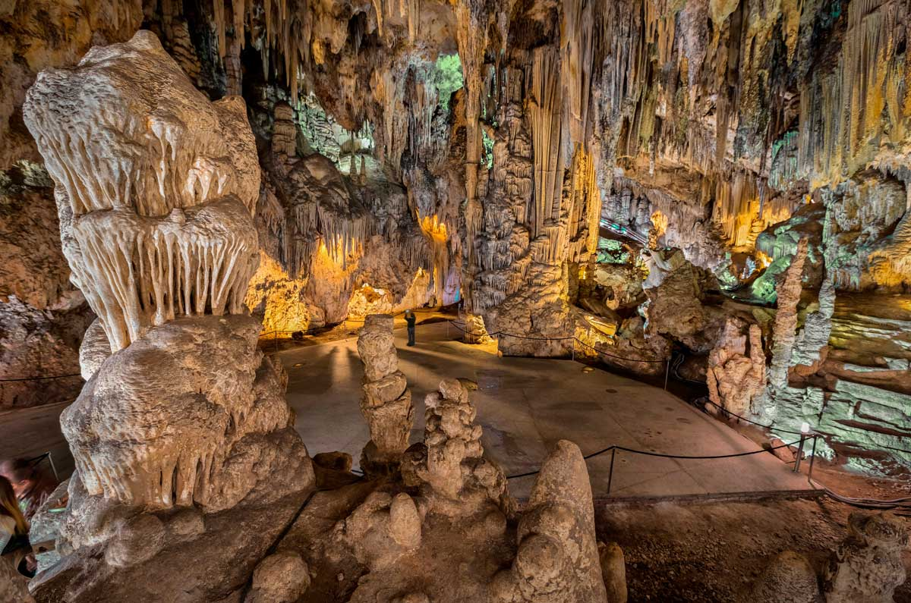
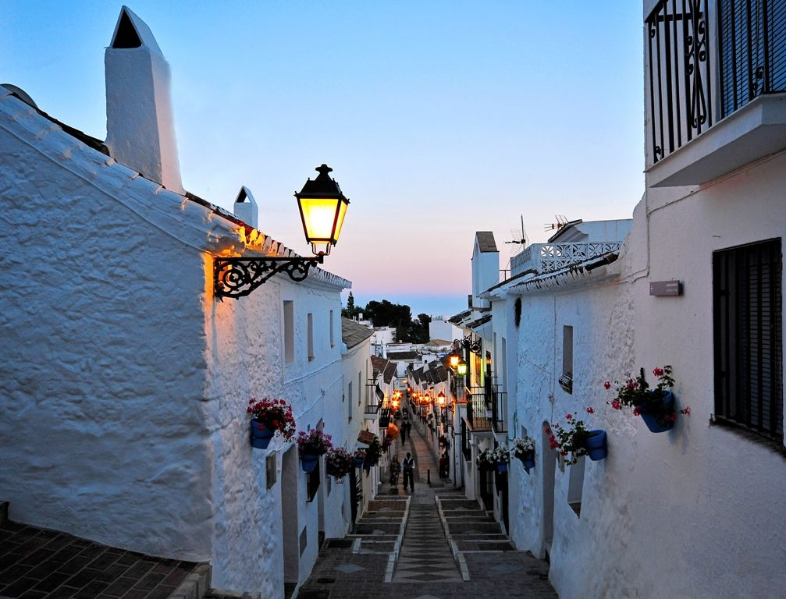

Vertical cliffs, Moorish white villages, UNESCO World Heritage and glamorous coastline. Five very different excursions — here is how to choose the right one.
27 Jun 20268 min readDay Trips · Málaga
Caminito del Rey — boardwalks more than 100 metres above the Gaitanes gorge · Málaga
Torremolinos is the perfect base for 5 completely different day trips into the Andalusian interior and along the coast. Each has its own character — from vertical cliffs and UNESCO palaces to white villages and luxury marinas. This guide tells you exactly what to expect from each one and who it suits best.
Day Trip 01
Caminito del Rey
Best for: adventure without extremesHiking3–4 hrs walking
A 7.5 km trail between Ardales and Álora with 3 km of boardwalks pinned to vertical cliff faces more than 100 metres above the Gaitanes gorge. It is the most-searched excursion in the region and the most exhilarating if you enjoy adventure without going to extremes.
The full day trip from Torremolinos takes about 8 hours, typically with a specialist guide and entrance ticket included. Children under 8 are not permitted on the trail for safety reasons. Wear walking shoes. You are back in time for an afternoon on the beach.
Walking time3–4 hours
Full day trip~8 hours
Min. age8 years
CancellationUp to 24h before
Caminito del Rey — one of Spain's most dramatic walking routes, high above the Málaga interior.
Day Trip 02
Nerja, the Caves & Frigiliana
Best for: white villages & historyStalactite cavesBalcón de Europa
A 7.5-hour route combining the Cuevas de Nerja (with ancient stalactites and prehistoric cave art), the white village of Frigiliana and the Balcón de Europa — one of the most spectacular clifftop viewpoints on the Mediterranean. Cave entry and a local wine in Frigiliana are typically included.
Frigiliana is the most photogenic white village in the area: cobbled streets, flower-filled balconies and local cane honey. The Balcón de Europa stops you in your tracks. Many visitors linger over lunch up there with the sea below.
Duration7.5 hours
IncludesEntry + wine
Min. group4 people
GuideES / EN

Cuevas de Nerja — ancient geological formations with evidence of prehistoric human habitation.
Day Trip 03
Mijas & Marbella
Best for: families & a relaxed dayWest coastPuerto Banús
The most relaxed option: 9 hours with a stop in Mijas (a white hill village with views down to the coast), Marbella (modern seafront, luxury beaches) and often Puerto Banús — the Costa del Sol's most glamorous marina. More about looking than buying, but impressive nonetheless.
The ideal choice if you are travelling with family or don't want a physically demanding day. Two completely different atmospheres in one day.
Duration9 hours
DifficultyEasy
ChildrenAll ages
VibeCoast & luxury

Mijas — one of the most photogenic white villages on the Costa del Sol.
Day Trip 04
Ronda & Setenil de las Bodegas
Best for: history & photographyPuente NuevoMountain interior
Ronda is split by its famous Puente Nuevo bridge — 120 metres above a gorge, built in 1793 and one of Andalucía's defining images. The tour includes the Almocábar Gate, Santa María la Mayor church and the Maestranza bullring, the oldest in Spain.
Many tours also include Setenil de las Bodegas, a white village where houses are literally built into rock overhangs. As strange as it sounds. The trip takes 10–11 hours — the longest of these inland excursions, but worth every minute.
Duration10–11 hours
DifficultyModerate
StyleHistory / architecture
Distance~100 km
Day Trip 05
Granada & the Alhambra
Best for: UNESCO World HeritageAlhambra palaceFull day
The longest and most ambitious day trip — 12–13 hours in total. The Alhambra complex (Nasrid Palaces, Generalife gardens, Alcazaba fortress) is one of the finest examples of Moorish architecture in the world and Spain's most-visited monument. Many tours include a guide, the Alhambra entrance and a stop in the historic Albaicín neighbourhood.
Book well in advance: Alhambra tickets sell out weeks ahead. The journey from Torremolinos is around 1.5–2 hours each way. Exhausting but genuinely unforgettable.
Duration12–13 hours
DifficultyModerate
BookingAdvance essential
Distance~130 km
How to choose your day trip
1Want adventure? → Caminito del Rey. Breathtaking gorge walk, back in time for the beach.
2Love white villages and history? → Nerja + Frigiliana. Caves, cliffs and Moorish charm.
3Travelling with family? → Mijas + Marbella. Easy, scenic and effortlessly glamorous.
And when you return from your day trip, Plaza Paraíso is the perfect way to spend the evening — live music and shows at the Torremolinos bullring from 25 July to 13 September 2026. See the full programme.
Quick answers
FAQ: Day trips from Torremolinos
What is the best day trip from Torremolinos?
It depends what you're after. For adventure, the Caminito del Rey is unmissable. For culture and history, Granada and the Alhambra is the most rewarding. For a relaxed mix of beach and white village, Nerja and Frigiliana works beautifully. For families, Mijas and Marbella is the easiest day out.
How do I get to the Caminito del Rey from Torremolinos?
The easiest option is an organised day trip from Torremolinos, which includes transport, an English-speaking guide and entrance ticket. The walk is about 7.5 km and takes 3–4 hours. Children under 8 are not permitted on the trail.
Can I do Granada as a day trip from Torremolinos?
Yes, but it is a long day — around 12–13 hours including travel (roughly 1.5–2 hours each way by coach). Organised tours include the Alhambra entrance ticket and guide. Book well in advance as Alhambra tickets sell out weeks ahead.
Is Ronda worth visiting from Torremolinos?
Absolutely — Ronda is one of Andalucía's most dramatic towns, perched on a gorge with its iconic Puente Nuevo bridge. Allow a full day (10–11 hours). Many tours include Setenil de las Bodegas, where houses are built into rock overhangs.
Day trip done — evening sorted
End the day at Plaza Paraíso
From 25 July to 13 September 2026, the Plaza de Toros de Torremolinos hosts concerts, theatre and DJ sets every Thursday to Sunday from 7pm.